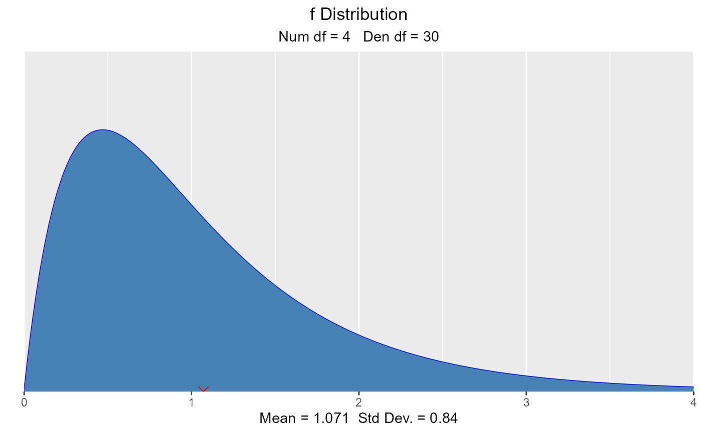
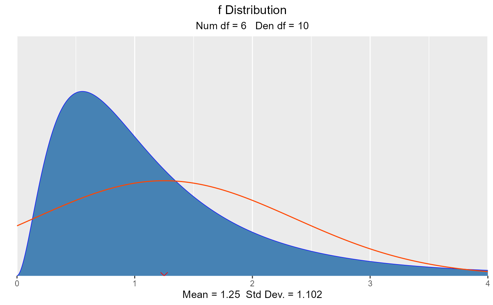
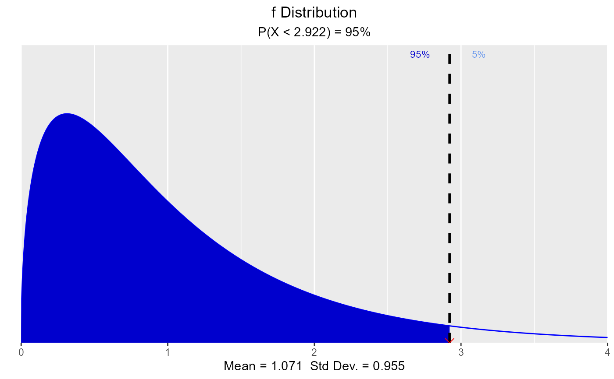
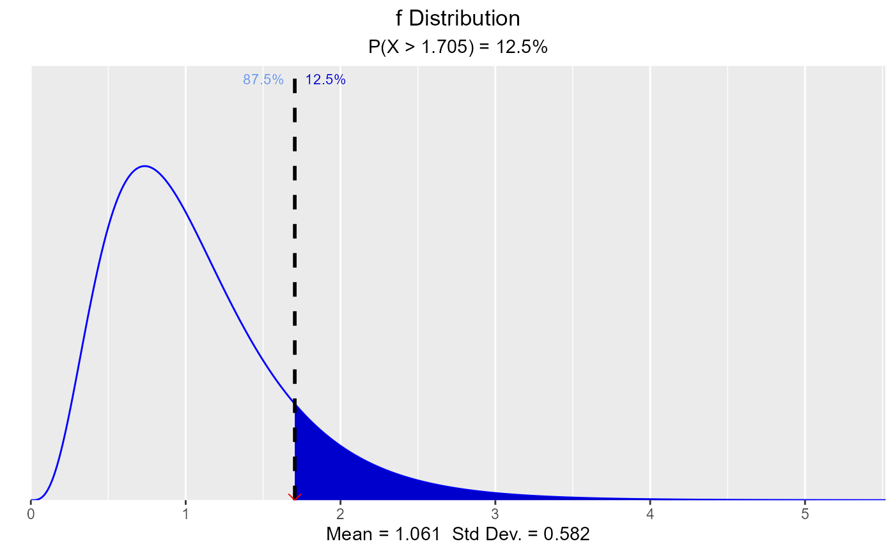
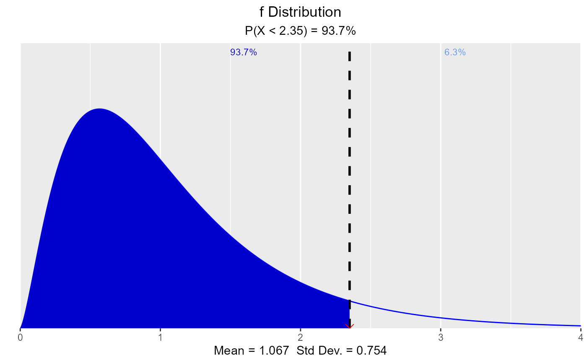
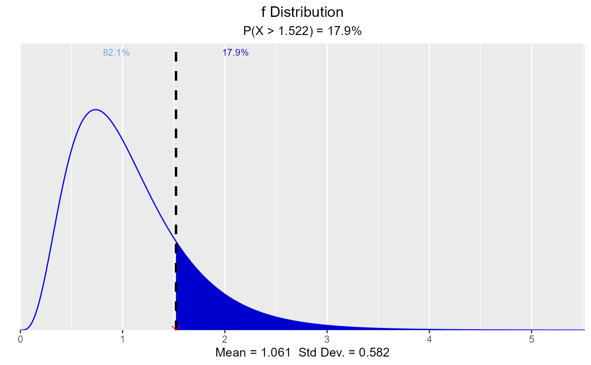

Visualize how changes in degrees of freedom affect the shape of the F distribution. Compute & visualize quantiles out of given probability and probability from a given quantile.
Arguments
- num_df
Degrees of freedom associated with the numerator of f statistic (at least 1; need not be a whole number).
- den_df
Degrees of freedom associated with the denominator of f statistic (positive; need not be a whole number).
- normal
If
TRUE, normal curve with samemeanandsdas the F distribution is drawn. The overlay is omitted with a message whenden_df <= 4(the variance is undefined).- print_plot
logical; if
TRUE, prints the plot else returns a plot object.- probs
Probability value, strictly between 0 and 1 and within
(1e-12, 1 - 1e-12). The computed quantile must invert the corresponding F tail to within 1e-6 relative error; otherwise a numerical resolution error is reported.- type
Lower tail or upper tail.
- perc
Quantile value.
Details
Percentages below 1e-10% are displayed as < 1e-10%, and probabilities within 1e-10% of 100% as > 99.9999999999%.
The F density must not be too concentrated to draw: the central
99.9998% probability mass must span a finite interval of at least 0.001.
More concentrated densities (for example num_df = den_df = 1e9) stop
with a clear error instead of returning an inaccurate shaded area. A tail
that does not converge at double precision (for example den_df = 0.01)
is reported as a tail-overflow error, separately from concentration.
Every probability, cutoff and caption is computed from the F density,
distribution and quantile functions, never from the drawn grid: the shading
polygon starts at the support and spans the whole event, and its own area is
checked against the exact event probability (within 1e-6 relative error above the display floor). Where the density
is unbounded at zero it is capped on the display axis only; the area check
and the printed probability always use the unclipped density.
Very wide heavy-tail windows are drawn on a symmetric log axis so the shaded
event stays visible. Captions use one rounding rule and are true at the
precision they print. When qf() fails to invert pf() to
relative 1e-6, the equivalent F-beta quantile is used. Quantiles may also
be refined by root finding, so equal
degrees of freedom up to at least 1e8 plot accurately. A shaded
region too narrow to occupy a pixel at the plotted scale is marked with a
visible strip in the panel and disclosed in the caption; its polygon and its
checked area are unchanged. Every plotting grid has a bounded number of
points, whatever the degrees of freedom or the cutoff.
Examples
# visualize F distribution
vdist_f_plot()

vdist_f_plot(6, 10, normal = TRUE)

# visualize quantiles out of given probability
vdist_f_perc(0.95, 3, 30, 'lower')

vdist_f_perc(0.125, 9, 35, 'upper')

# visualize probability from a given quantile
vdist_f_prob(2.35, 5, 32)

vdist_f_prob(1.5222, 9, 35, type = "upper")
